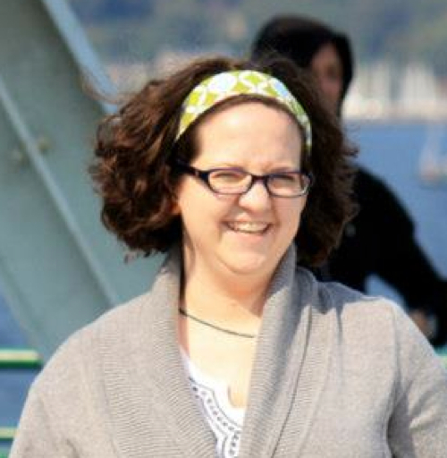
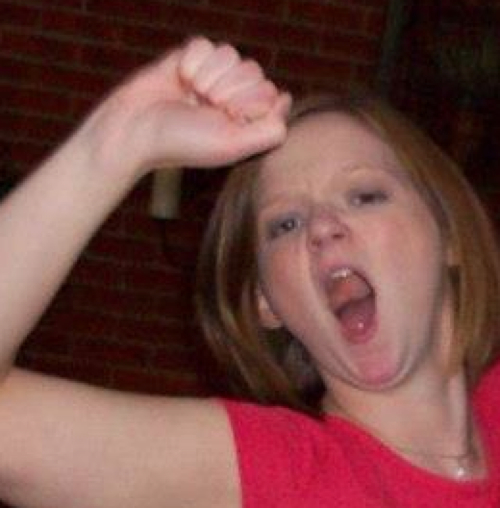
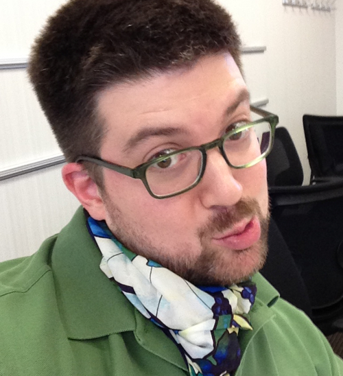
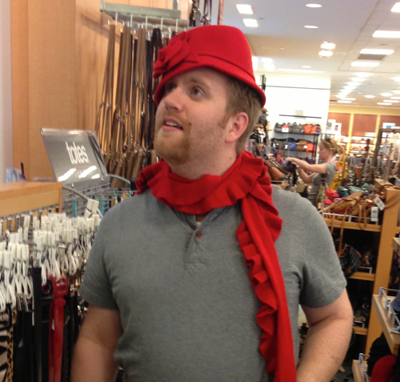

The Details…
- When? August 2, 2014 @ 4:00pm
- Where? Washington Park Arboretum
- Food? El Gaucho in Bellevue
- Who? Us. Of course. And you too!
- Why? Mostly for legal reasons.
That's right, it's all happening on Saturday, August 2. We plan on arriving at the Arboretum around 3pm. The ceremony will be held at the Lookout Gazebo, located within the Arboretum. The ceremony will start at 4pm. Afterwards, we invite all of our guests to join us at the Red Mountain room located in El Gaucho, Bellevue. Dinner and drinks are on us (And by us, I of course mean Mals' Dad. Thanks Dad!).
Directions…
The Arboretum
El Gaucho
The Cast…

The Bride
A.K.A. Mallory, Mals, The Malpal
The Daughter of Ron Blair and LeAnne Blair, Mals is originally from Michigan. She met Brian at the ultra romantic location known as Circuit City way back in 2004. She is now a professional dog trainer for the Seattle Area Humane Society, and enjoys keeping Brian calm.

The Matron of Honor
A.K.A. Hayley
Hayley is Mals' sister. She is married to Ryan and they have a son together named Silas. Hayley is also known for her ability to gross Brian out.

The Groom
A.K.A. Brian, Poppa Diddy Pop (self-given nickname)
Brian, like Mals, is also from Michigan. Brian is extremely grateful to have found Mals, despite the fact that he is sure she puts sedatives in his food.

The Best Man
A.K.A Andy
Andy and Brian became BFFs after working together for over a year. Andy is married to Kellie and they have one son together named Logan. Andy would be Brian's second choice after Mals due to his extreme handsomeness.